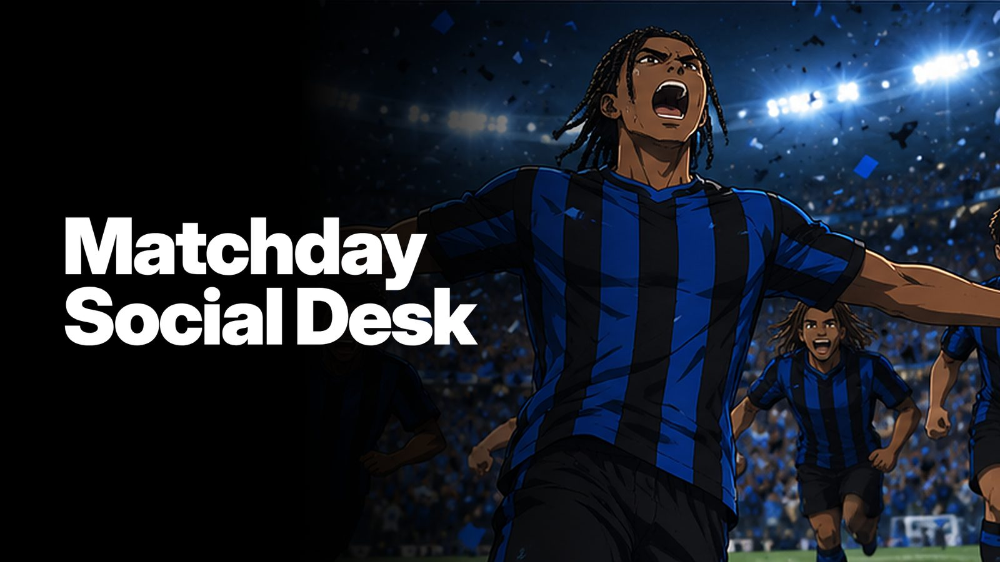
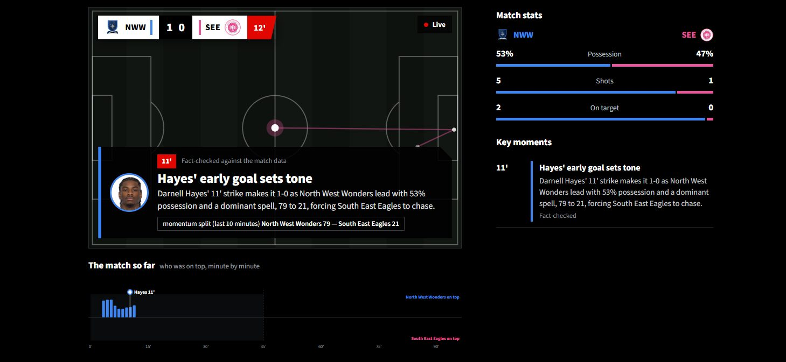
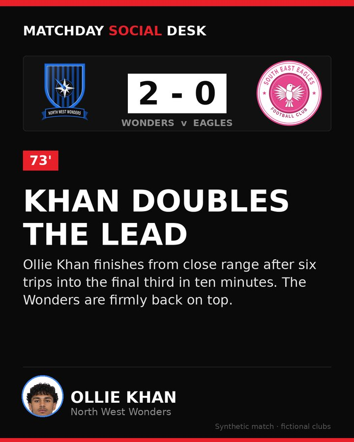

I built an AI team that watches football

fans don't want the data. they want the story. so when microsoft and the premier league opened their inside the game developer hackathon, i knew what i wanted to build.
the brief: turn football data into match intelligence, live narratives and recaps for every fan. i saw it on a monday. two days later, i'd submitted matchday social desk.
WHAT IT DOES
a team of ai agents watches a match live. every time something happens, they decide whether it matters, and if it does, they explain why.
the analyst works out what's really going on: momentum, pressing, control vs chaos. fan voice rewrites it for whoever's watching. the fact-checker throws out any number that isn't in the match data and sends it back. the translator covers eight languages. at full time, the storyteller writes the recap.

THE SAME MATCH, TOLD DIFFERENTLY
this is the bit i care about most. an analyst gets xG and pass difficulty. a casual fan gets plain english. you can pick a language, a club, or follow one player all game. and at half-time, you can ask the pundit anything. it looks up the stats before it answers, and it can't see the future, so no spoilers.
A CONTENT TEAM IN A BOX
every big moment also becomes a ready-to-post package for the club's channels: a hook for the first three seconds, a caption, a format idea, and a branded graphic to download.

THE BIT THAT MATTERS
ai is only useful in sport if fans can trust it.
so nothing unverified ever reaches the screen. every caption is checked against the data first, and if it fails twice, you get a plain, safe caption built straight from the numbers instead.
everything is synthetic: two made-up london clubs, north west wonders v south east eagles, and a match i generated myself. the crests are drawn in code, and the squad photos are ai-generated people who don't exist.
MADE WITH
python, streamlit, microsoft foundry (gpt-5-mini and gpt-audio-mini), azure ai speech, github and github copilot.